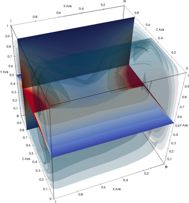
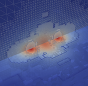
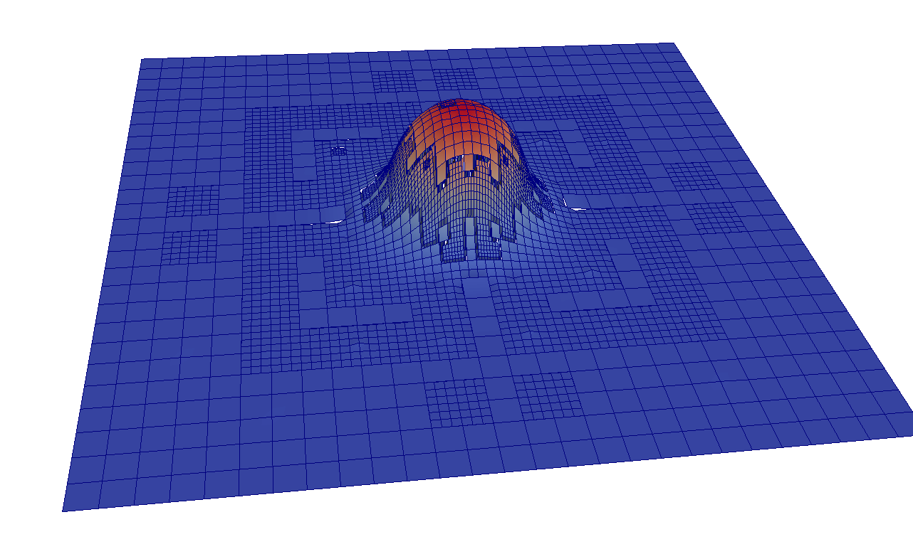
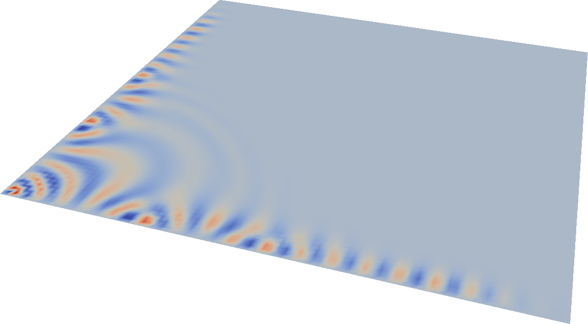
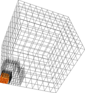
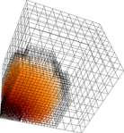
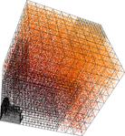

|  |
Together with Marion Weinzierl, I've submitted a paper Marion Weinzierl, Tobias Weinzierl: Quasi-matrix-free hybrid multigrid on dynamically adaptive Cartesian grids. ACM Transactions on Mathematical Software A preprint is available from arXiv. In the paper, we discuss various realisation idioms for multigrid that fuse ideas of FAS, hierarchical generating systems, Galerkin coarse grid operator computations, stencil compression and BoxMG determining problem-dependent inter-grid transfer operators. It should be very straightforward to reconstruct the ideas from the paper at hands of a Peano download. However, I summarise the most important points/pitfalls here:
|
|
This work is based upon work I've submitted together with Bram Reps as Bram Reps, Tobias Weinzierl: Complex additive geometric multilevel solvers for Helmholtz equations on spacetrees. ACM Transactions on Mathematical Software You can read a preprint at arXiv. A source code snapshot of the code used for the paper is available here. Please note that this is a complete snapshot of Peano with all of its glue code and the matrixfree toolbox which is a small collection of routines I use for matrix free linear algebra. As it is a snapshot, both Peano and its toolbox might be available as newer versions today, and it might be reasonable to rewrite a solver from scratch if you need one for a particular project. This snapshot is merely made available as a documentation and to facilitate reproducability. Here are some things to do if you work with the snapshot:
Compatibility remarks: We use some C++14 features in this code. Our tests with GCC 4.8.3 and GCC 4.9.1 have been successful, but we know that older compiler versions (anthing older than 4.7) might face problems. So please ensure that you have an up-to-date translator version. |
   |
|
Illustrations stem from the papers Weinzierl, T., Verleye, B., Henri, P. & Roose, D. (2016). Two Particle-in-Grid Realisations on Spacetrees. Parallel Computing 52: 42-64. Eckhardt, W., Glas, R., Korzh, D., Wallner, S. & Weinzierl, T. (2016), On-the-fly memory compression for multibody algorithms, in Joubert, G.R., Leather, H., Parsons, M., Peters, F. & Sawyer, M. eds, Advances in Parallel Computing 27: International Conference on Parallel Computing (ParCo) 2015. Edinburgh, Scotland, IOS Press, Amsterdam, 421-430. You can find a prepring of the Parallel Computing manuscript at arXiv. The underlying particle management within Peano is available as predefined user toolbox: if you want to use it, its merely a few simple additions to the specification file. No particle update has to be rewritten. |
   |
Illustrations stem from the dissertation
K. Unterweger: High-Performance Coupling of Dynamically Adaptive Grids and Hyperbolic Equation Systems, 2016The underlying patch management within Peano is available as predefined user toolbox: if you want to use it, its merely a few simple additions to the specification file. This toolbox is also used in the ExaHyPE project. The shockbubble experiment above uses the 3D Euler solver of David Ketcheson as found in the Clawpack solver. The tsunami simulation uses shallow water kernels by Michael Bader's group with a bathymetry from GEBCO ( The GEBCO_08 Grid, version 20100927, http://www.gebco.net ).
The video discusses work of the paper
Weinzierl, Tobias, Bader, Michael, Unterweger, Kristof & Wittmann, Roland (2014). Block Fusion on Dynamically Adaptive Spacetree Grids for Shallow Water Waves. Parallel Processing Letters 24(3): 1441006.